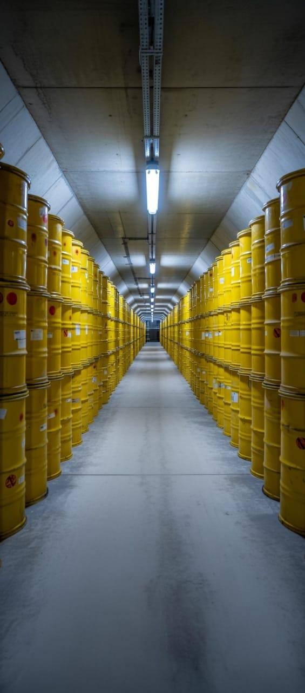
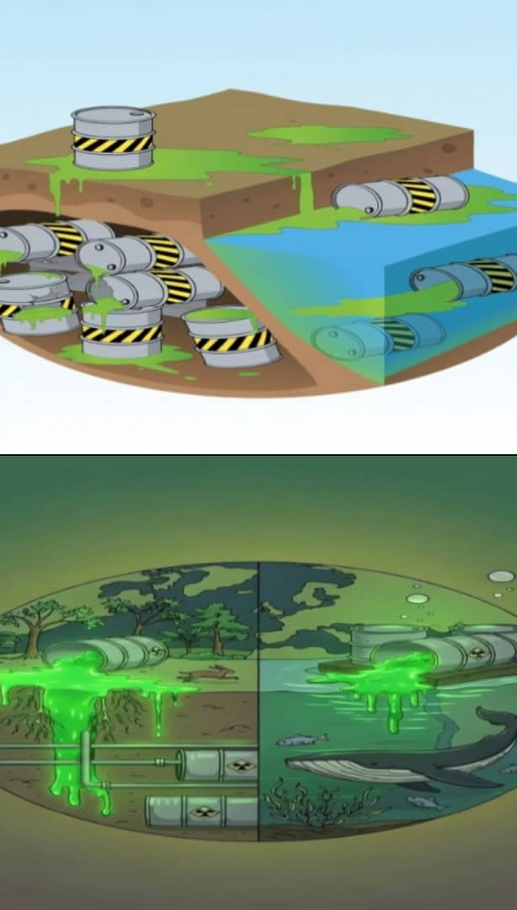

The research team under this local company has gone through chemical protocols and chain reactions to terminate the nature of these contagious chemical wastes and develop a simple solution to mitigate pollutions from causing disasters in relation to the natural environment, lives, life cycles, air filtrations and restorations of the land essentials.
Hazardous chemical wastes are;
1.Ignitable
2. Corrosive
3. Reactive
4. Toxic
Specific chemical groupings are;
1. Solvent
2. Heavy metals
3. Pesticide and herbicides
4. Pharmaceuticals & medical chemicals
There are lists of industries, developments, facilities, laboratories, mining, petroleum, nuclear, domestic, factories, agricultures, constructions, energy generations
and technologies that involves chemicals and stores, recycles, treat & disposed, secure landfills and store toxic chemical waste beneath the sea surface to safe guard
it from harming and poisoning the environment are not permanent solution to the waste. These wastes are exposable if affected, tempered as the time goes, during natural
phenomena or development etc.
The global hazardous waste survey, screening to profile thousands of treatment and mapping the waste management of massive volume of active chemical waste had been reviewed; however, the facilitative instrument has never come up with a fixed solution to the chemical waste. A permanent solution for this planet is a must requirement for the coming years or for the future generations to live a stable life or strict measures is needed to prevent disasters.
Site clean-up, remediation, toxicity testing and Waste minimization programs hasn’t produce enough results for the chemical waste prevention measures to overcome soil disasters, air pollutions and natural water purification standard towards global expectation to target and visionary goals to preserve the environment. The tactics, procedures, tools and expert magnesium used have been exhausted and the volumes of chemical waste pollution keep increases in an alarming rate in line with the current technologies or developments according to the establishments.
This world pledge in tears within while pretending to be usual in every daily progress but the impact is seen and heard by every eyes or ears as a witness, however, there is no fixed solution for this planet to rely and accommodate the growing toxic poisons or disasters for the inhabitant today and tomorrow.
From an in-depth study, we retrieved information on chemical track that creates;
1. Weather pattern / affects the climate due to hazardous chemical waste depositions from three different states;
a. Solid – bare land, top soil, rocks etc.
b. Liquid – water, sea, rivers, creeks, lakes etc.
c. Gas – air, oxygen, carbondioxide etc.

Many organisations currently rely on treatment systems, recycling, landfills, storage facilities, and waste containment programs to manage hazardous materials.
